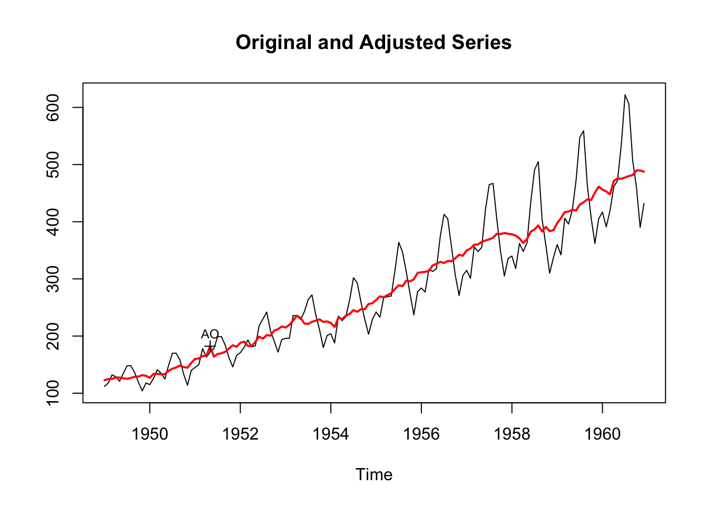
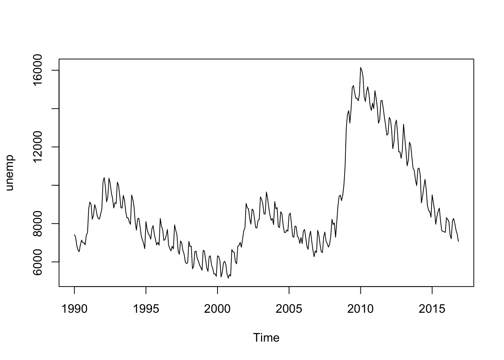

1 Introduction
What is Seasonal Adjustment?
What is X-13ARIMA-SEATS (X13)?
Who uses X13?
Available alternatives in and outside of R (some topics are covered in chapter VI)
Case Study: A use cases outside of official statistics: seasonal adjustment of business data
Many time series exhibit a regular seasonal pattern over the year. US unemployment, for example, is usually higher from January to March, and again in June and July. Similarly, retail sales tend to peak with the Christmas season.
To model the underlying structure of these series, any regular (seasonal) patterns are estimated and removed from the data. For example, to see if the economy is moving out of a recession during certain months, one wants the labor market data be free from such seasonal effects. Seasonal adjustment decomposes a time series into a trend, a seasonal and an irregular component and removes the seasonal component from the data.
In official statistics, seasonal adjustment has a long tradition. The original X-11 software was developed by the US Census Bureau in the 1960s, and later improved by Statistics Canada (Dagum 1980). Subsequent software packages by the US Census Bureau were called X-12-ARIMA (Findley, Monsell, Bell, Otto, and Chen 1998) and X-13ARIMA-SEATS (or X-13, for short) (Monsell 2007). Today, X-11 is still used as a name for filter-based seasonal adjustment methods within X-13. Meanwhile, TRAMO-SEATS, developed by the Bank of Spain (Caporello, Maravall, and Sánchez 2001), offers an alternative model-based approach to seasonal adjustment.
In its most recent version, X-13 offers these two seasonal adjustment methods in a single command-line tool, written in Fortran. The National Bank of Belgium has created an alter- native Java-based implementation called JDemetra+ (National Bank of Belgium, Deutsche Bundesbank, Eurostat 2017) which is also widely deployed by statistical agencies. One of either the TRAMO-SEATS or X-11 method of seasonal adjustment is used by almost all (government) statistical offices throughout the world.
R (R Core Team 2017) offers several possibilities to perform seasonal adjustment in the stats package included with R. The decompose function uses filtering to split a time series into a trend, a seasonal and an irregular component. An alternative method is stl, which uses local regressions (and has some extensions offered by the stlplus package by Hafen (2016)). While both methods allow a multiplicative or an additive decomposition, these methods are somewhat limited in modeling actual data series.
The programs used by statistical offices provide an extensive toolbox to deal with many advanced (and more irregular) aspects of seasonality, such as trading day adjustments, moving holiday adjustments or automated outlier detection.
1.0.1 Getting Started
If you use R installing X-13ARIMA-SEATS from CRAN is as easy as installing any other R package CITE JSS:
install.packages("seasonal")Once the package is installed it can be loaded in the usual way:
The seas function provides the core functionality of the package. By default, seas calls the automatic procedures of X-13 to perform a seasonal adjustment that works well in most circumstances:
seas(AirPassengers)
Call:
seas(x = AirPassengers)
Coefficients:
Weekday Easter[1] AO1951.May MA-Nonseasonal-01
-0.00295 0.01777 0.10016 0.11562
MA-Seasonal-12
0.49736 The first argument of seas is a time series of class “ts”. The unemp example series measures US unemployment and is included in seasonal. The function returns an object of class “seas” that contains the necessary information on the adjustment performed on this time series.
m <- seas(AirPassengers)There are several functions and methods for “seas” objects. The final function returns the adjusted series. The plot method shows a plot with the unadjusted and the adjusted series.
plot(m)
The summary method displays an overview of the model, very similar to the one produced by R’s lm function:
summary(m)
Call:
seas(x = AirPassengers)
Coefficients:
Estimate Std. Error z value Pr(>|z|)
Weekday -0.0029497 0.0005232 -5.638 1.72e-08 ***
Easter[1] 0.0177674 0.0071580 2.482 0.0131 *
AO1951.May 0.1001558 0.0204387 4.900 9.57e-07 ***
MA-Nonseasonal-01 0.1156204 0.0858588 1.347 0.1781
MA-Seasonal-12 0.4973600 0.0774677 6.420 1.36e-10 ***
---
Signif. codes: 0 '***' 0.001 '**' 0.01 '*' 0.05 '.' 0.1 ' ' 1
SEATS adj. ARIMA: (0 1 1)(0 1 1) Obs.: 144 Transform: log
AICc: 947.3, BIC: 963.9 QS (no seasonality in final): 0
Box-Ljung (no autocorr.): 26.65 Shapiro (normality): 0.9908 1.0.2 Example Series
Throughout the book, we work with various example series. These sereis are included in seasonal and reflect various aspects of seseonal adjusmtent.
Below is discussion of the series used in this book.
1.0.2.1 US Unemployment
plot(unemp)